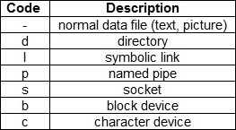
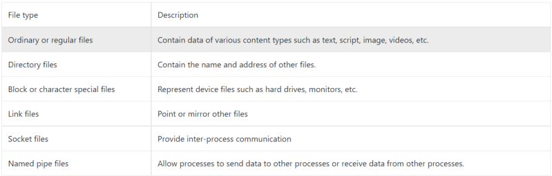
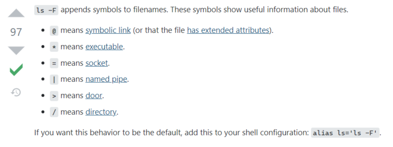

In linux everything is like a file. But unlike windows file extensions hold no importance in linux. Extensions are only used for graphical applications and also to ease of access for us humans.
file command can be used to determine type of file.
file name;
In above image we can see that even after changing extension of image from png to jpeg it is still a png image. File type in linux is determined by file headers instead of file extensions.
In image above we ran ls command with -l flag. Here in first column we have some characters(d,r,w,x,- etc.). That column shows type of file and file permissions for user, group and everyone respectively, 3 characters for everyone. There are total 10 characters in first column, first character from which shows file type. In above there is either d or - where d represents directory and - represents regular files. There are other file type specifiers too.
Character specifier for different files.

File type explanations.

More on identifying file types
-F flag can be used in along with ls to print special symbols along with each file type.
Notice different symbols like /,@ etc after file names to show their type.
